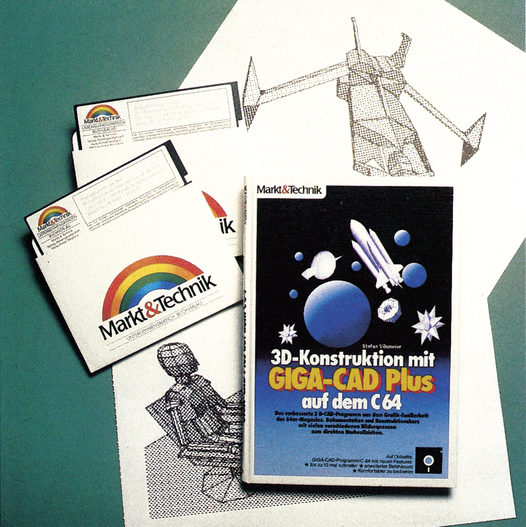
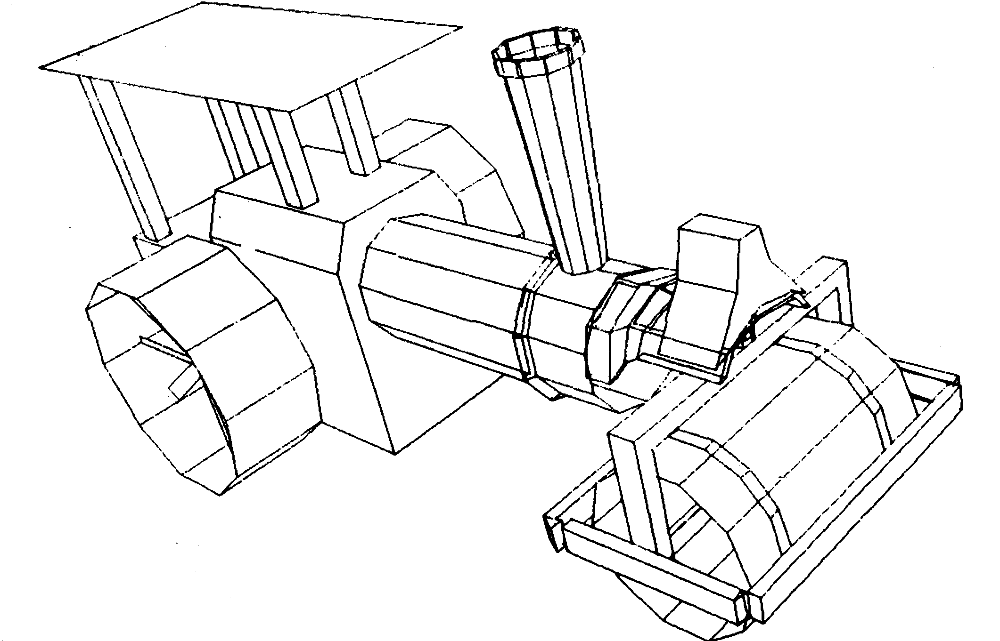
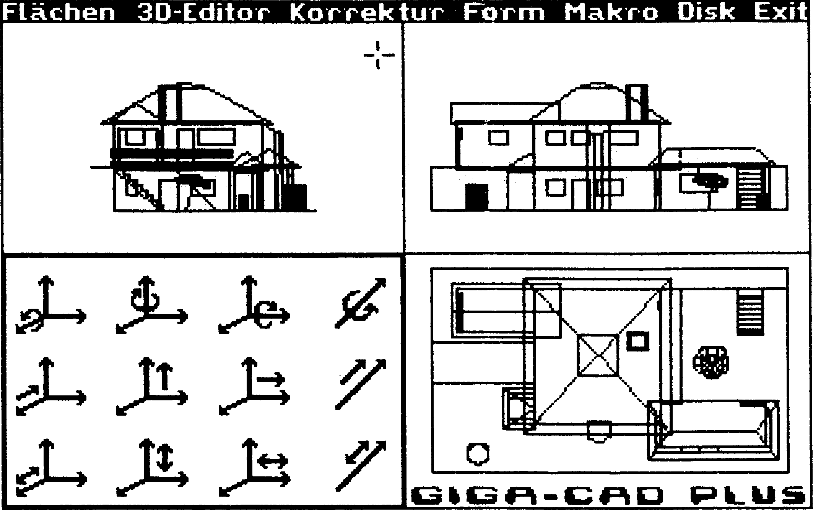
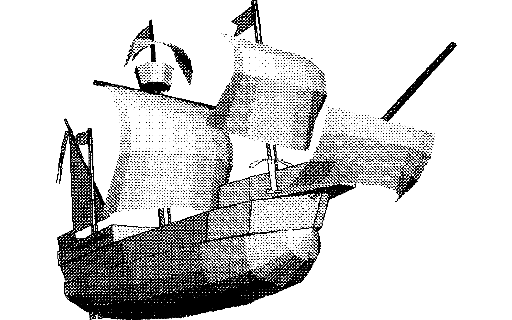
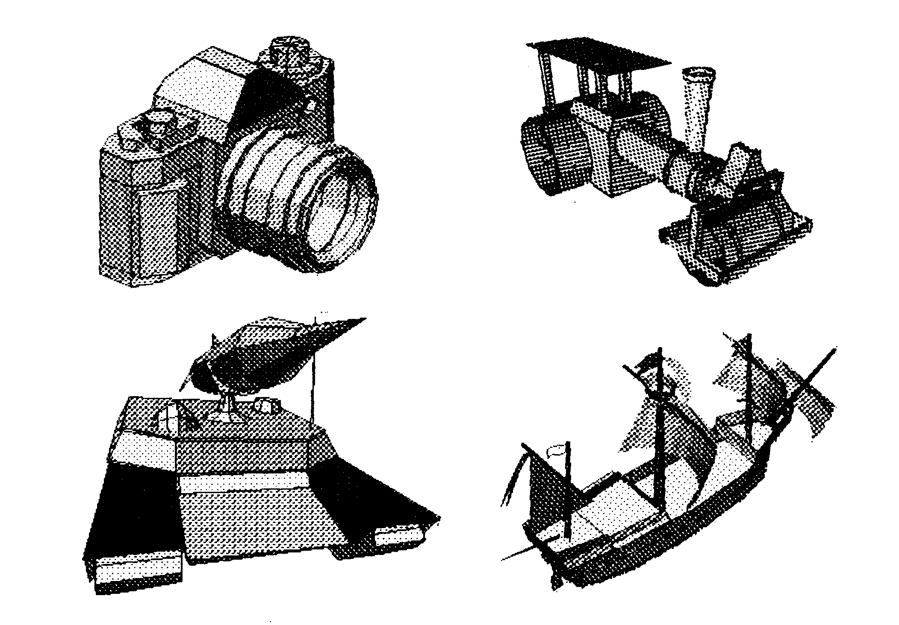

Giga-CAD Plus — Ein würdiger Nachfolger?
Knapp ein halbes Jahr nach dem Triumph von Giga-CAD (Sonderheft 6/86) feiert Giga-CAD Plus, das mit zusätzlichen Features glänzt, Premiere. Was das Programm Neues bietet, erfahren Sie in diesem Test.
Bislang herrschte die Meinung, daß dreidimensionale Grafiken und Filme nur größeren Computern vorbehalten seien. Doch mit dem Erscheinen von Giga-CAD im Sonderheft 6/86 wurden viele eines besseren belehrt. Giga-CAD setzte neue Maßstäbe bei der Konstruktion dreidimensionaler Körper, ähnlich wie Hi-Eddi es bei normalen Zeichenprogrammen tat. Doch die Autoren von Giga-CAD gaben sich mit dem Erreichten noch nicht zufrieden. Seit kurzer Zeit ist ein Buch mit einer wesentlich schnelleren und erweiterten Version des Programms auf dem Markt erhältlich: »3D-Konstruktion mit Giga-CAD Plus auf dem C 64« (Bild 1).

3D-Konstruktion
Für diejenigen unter Ihnen, für die Giga-CAD absolutes Neuland ist, wird hier ein kurzer Abriß der Möglichkeiten gegeben.
Das Programm ermöglicht die einfache Konstruktion dreidimensionaler Körper, ohne daß der Anwender komplizierte Formeln oder Zahlenkolonnen eingeben muß. Diese 3D-Körper lassen sich mit Hilfe des Joysticks um alle möglichen Achsen drehen oder in verschiedene Richtungen verkleinern beziehungsweise vergrößern.
Die konstruierten Körper lassen sich mit einer beliebigen Lichtquelle vielfältig schattieren (bis zu 192 Graustufen) und mit einer maximalen Auflösung von 1000 mal 640 (!) Punkten zu Papier bringen (Bild 2). Auch dreidimensionale Filme mit 24 Bildern pro Sekunde lassen sich ohne großen Programmieraufwand erstellen.

Was ist neu?
Was hat nun die Plus-Version gegenüber der alten Version zu bieten?
Die auffälligsten Veränderungen bemerkt man im Editor (Bild 3). Hier erscheinen drei neue Grafiksymbole, mit denen es eine besondere Bewandtnis hat: Sie veranschaulichen eine frei definierbare Achse, die sich sogar speichern läßt. Dies hat den enormen Vorteil, daß sich erstellte Körper oder Flächen um beliebige Achsen drehen können. Auch Dehnungen und Stauchungen sind jetzt noch einfacher realisierbar. Diese Funktion macht das Programm also effizienter und flexibler.

Die Menüleiste im Editor hat sich völlig verändert. Einige Funktionen erhielten nur neue Namen, andere wurden radikal überarbeitet. So ist der Eingabeteil für 2D-Flächen stark verbessert worden. Der Cursor verschwindet jetzt bei der Konstruktion der Flächen nicht mehr und läßt somit eine genauere Positionierung zu. Auch muß das Zeichnen von Kreisen nicht mehr von Hand gemacht werden, denn dafür ist eine spezielle Circle-Routine vorhanden. Diese Routine ist sehr flexibel gehalten. So lassen sich neben selbstverständlichen Dingen wie Mittelpunkt und Radius auch die Anzahl der Eckpunkte und der Winkel frei definieren. Verbessert wurden auch die Korrekturmöglichkeiten bei der Eingabe. Wollte man bei Giga-CAD einen falsch gesetzten Eckpunkt löschen, so sprang der Cursor zum letzten Eckpunkt zurück. Nicht so bei Giga-CAD Plus. Hier bleibt die Linie nach wie vor erhalten, nur der falsch gesetzte Eckpunkt wird gelöscht.
Völlig neu hinzugekommen ist eine Funktion zum Konstruieren von Löchern und Durchbrüchen in der Fläche. Was also in Giga-CAD gar nicht oder nur mit Tricks möglich war, ist bei der Plus-Version sehr einfach zu realisieren.
Drückt man auf die Taste <@>, bleibt die erstellte Fläche erhalten, zusätzlich kann aber eine neue Fläche eingegeben werden. Mit dieser Funktion lassen sich zum Beispiel 3D-Buchstaben einfach erzeugen.
Die Eingabe von Rotationskörpern, die bei Giga-CAD noch einen eigenen Menüpunkt beanspruchte, wurde bei der Nachfolgerversion mit in die Flächeneingabe integriert. Natürlich kann auch in diesem Modus die Kreisfunktion benutzt werden.
Verblüffend schnell
Auffallend im 2D-Editor ist die gesteigerte Geschwindigkeit gegenüber Giga-CAD. Dieser Geschwindigkeitsunterschied wird am deutlichsten im 3D-Editor. Konnte dieser in der ersten Version wegen seiner Trägheit nicht unbedingt begeistern, lassen sich nun damit relativ schnell gute Ergebnisse erzielen. Damit wird das Arbeiten mit Giga-CAD Plus angenehmer, da sich die oft lästigen Wartezeiten stark verkürzen. Will man zum Beispiel eine Linie oder ein Makro löschen, muß nicht mehr wie bei Giga-CAD gewartet werden. Das Löschen erfolgt nun blitzschnell.
Eine Funktion, die dem Anwender Zeit sparen hilft und großen Nutzen bringt, ist die Transformationsmatrix. Mit Hilfe einer solchen Matrix lassen sich zahlreiche Umformungen von Objekten zusammenfassen und per Tastendruck wie ein einziger Befehl ausführen. Diese Funktion ist in Giga-CAD Plus entscheidend verbessert worden. Während in der Urversion die Auswirkungen einer ausgeführten Matrix nicht mehr rückgängig gemacht werden konnten, ist dies bei der Plus-Version möglich. Außerdem kann die Transformationsmatrix jetzt gespeichert werden.
Ferner wurde eine Wiederholfunktion eingebaut, mit deren Hilfe sich die monotone Ausführung von immer gleichen Umformungen und Operationen mit Flächen zusammenfassen lassen.
Neu und sehr interessant ist die Funktion für fraktale Körper. Damit läßt sich aus einer Fläche ein beliebiger Punkt greifen und so herausziehen, daß die damit verbundenen Linien folgen, also »Berge« entstehen. Auf diese Weise werden die bekannten fraktalen Berge und Täler erzeugt. Die Segel des »fliegenden Holländers« aus Bild 4 wurden beispielsweise mit dieser Funktion erstellt.

Wie man sieht, hat sich im Editor einiges geändert. Doch auch im Hauptteil des Programms kam es zu Verbesserungen. Ein im ZOOM-Modus definierter Ausschnitt läßt sich nun beliebig verschieben. Weiterhin können in diesem Programmteil bis zu drei Transformationsmatrizen definiert werden.
Mehr Komfort
Wählt man DISPLAY an, läßt sich feststellen, daß das Zeichnen und Schattieren um einiges schneller vonstatten geht (Bild 5). Im Dreitafelbild ist eine Umformung mit anschließender neuer Bildschirmdarstellung achtmal schneller. Das Löschen von Makros braucht sogar nur noch ein zwanzigstel der ursprünglichen Zeit.

Völlig überarbeitet wurde die Möglichkeit, Filme zu erstellen. Diese Option arbeitet nun um einiges flexibler. Giga-CAD Plus gestattet es, einzelne Teilkörper unabhängig voneinander und sogar gegeneinander zu bewegen.
Lobenswert ist auch, daß die Druckeranpassung Verbesserungen erfuhr. Somit lassen sich nahezu problemlos fast alle gängigen Drucker per Tastendruck einstellen oder anpassen (auch MPS 802).
Es gäbe noch über zahlreiche Verbesserungen zu berichten, die zwar einzeln kaum erwähnenswert sind, aber in ihrer Gesamtheit den Komfort heben. Dies würde den Umfang dieses Testberichts aber bei weitem sprengen.
Es soll noch darauf hingewiesen werden, daß das Programm mit einem sehr guten Buch und zwei beidseitig randvoll bespielten Disketten zu einem Preis von 49 Mark erhältlich ist. Dieses Preis/Leistungsverhältnis dürfte einen neuen Maßstab gesetzt haben.
(Bernhard Carli/dm)Stefan Vilsmeier, »3D-Konstruktion mit Giga-CAD Plus auf dem C 64«, 49 Mark, MT 90409, Markt&Technik-Verlag AG, Hans-Pinsel-Str. 2, 8013 Haar bei München